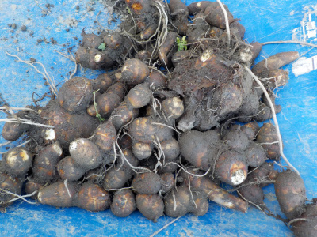
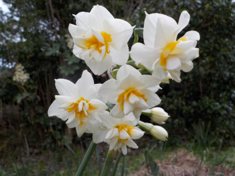
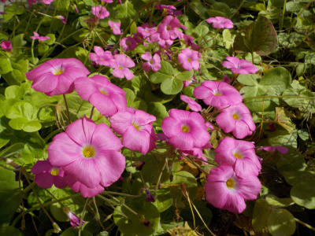
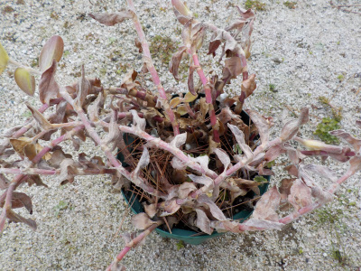
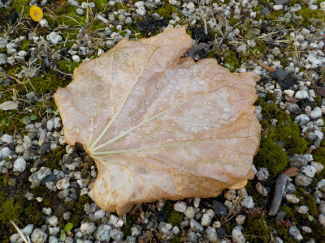

遊びで植物を育てよう
2023/12/30
里芋のお味噌汁が食べたい季節になりました。

お正月に食べようと里芋を掘りました。
まだまだ沢山畑にあるので、これからしばらくの間は里芋を沢山食べる予定です。
【ページTOP】
【12月TOP】
【園芸TOP】
2023/12/24
水仙が咲く時期になりました。

もう水仙が咲く時期なんですね。
なんとなーく2月とか3月のイメージが強いです。
【ページTOP】
【12月TOP】
【園芸TOP】
2023/12/09
カタバミが見頃です。

日光を浴びて元気が良さそうに見えました。
こんなの見るとちょっと気分が良くなりますね。
【ページTOP】
【12月TOP】
【園芸TOP】
2023/12/03
トラデスカンチアが枯れました。

緑色がすっかりなくなって、ぐったりしました。地上部は完全に枯れました。
この植物的には冬になったんですね。私も冬に備えたいと思いました。
ヤッケ買おうかな。
【ページTOP】
【12月TOP】
【園芸TOP】
2023/12/03
どこからか大きな葉っぱがやってきました。

我が家にこの葉っぱの木はないです。どこから来たんでしょうね。
我が家の葉っぱもよそに飛んで行ってるんだろうな。
【ページTOP】
【12月TOP】
【園芸TOP】
過去の日記
【2022年12月の日記】
【2021年12月の日記】
【2019年12月の日記】
【2018年12月の日記】
【2017年12月の日記】
【2016年12月の日記】
【2015年12月の日記】
【2014年12月の日記】
【2013年12月の日記】
【ページTOP】
【12月TOP】
【園芸TOP】
畑仕事じゃないよ。
【おいしいものを食べよう。】【しっかり寝よう。】
【ソロ活をしよう!】【季節感のあることをしよう。】【動画視聴はほどほどに。】【当サイトの全てのコンテンツは無断転載禁止です。】